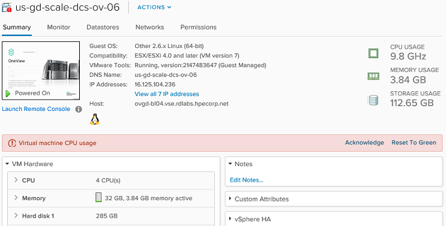

WireMock
Deploying a reliable and scalable environment for integration testing
Luiz Hermes Svoboda Junior
Gustavo Coelho
November 10 th, 2017
OneView Global Dashboard

- Helps IT staff troubleshoot alerts and view core inventory data across multiple HPE management systems
- Provides an enhanced infrastructure view for more informed and faster decision-making
- Smart search function that delivers access to devices of interest across data centers in seconds
- Aggregates critical activates from multiple appliances into a single feed to quickly identify issues
- Customizable inventory and compliance report for monitored assets
"Talk is cheap. Show me the code."
Linus Torvalds

HPE OneView Deployment Environment
- OneView runs in a virtualized environment
- Real hardware for development is expensive
- High resource consumption
- CPU, memory and disk
- Embeds a whole simulated data center within the same VM
- VM boot time ~15 minutes
- Lack of stability
- Usage of unreleased versions
- Running on a non compliant environment

HPE OneView Resource Identifiers (UUID)
- OneView uses an universally unique identifier to identify each resource
{
...
"serverProfileUri": "/rest/server-profiles/0d70e692-812a-40b4-ba45-68b6ddd399c0",
"serverGroupUri": "/rest/enclosure-groups/779ccfce-d8ac-41b0-8930-df7a5dd248b5",
...
}
- OVGD Reports module does not allow two resources with the same UUID
How to consistently replace these identifiers?
WireMock DEMO OVGD
Iniciar a demo com o trabalho desenvolvido rodando o WireMock Serviços do GD rodando (já startados pois UI pode demorar) Mostrar um exemplo dos nossos testes e que não há referência para wiremock Exibir a estrutura de pastas e confguração do wiremock Abrir a UI do GD e iniciar a execução Ouvintes podem ver coisas acontecendo no GD Mostrar os logs console do wiremock Destacar que a aplicação, teste e configuração do ambiente de testes (wiremock) estão no git portanto tudo versionado e principalmente reproduzívelIntegration Testing Environment Approaches
Set of “permanent” containers- Set of containers pre-configured (as many as needed)
- Each container with a set of configurations
- OneView with storage test requirements
- OneView with SPP bundle test requirements
- HC380 (Phoenix)
- HC380 (Hellfire)
- Real/Simulated appliances can also be available
Integration Testing Environment Approaches
Container on-demand- Tests have their Wiremock files “embedded”
- Containers are created/started dinamically before the test execution
- Real/Simulated appliances can also be available
Check slides, sample code and instructions
https://goo.gl/i9Xjsbx

|
Gustavo Coelho
Software Engineer
|
|
Luiz Svoboda
Software Engineer
|